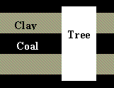

| Feature Article - December 1998 |
| by Do-While Jones |
In October we looked at the evidence that "prehistoric" dinosaurs lived in historic times, and were accurately described in ancient literature. In November we looked at the circular logic used by evolutionists to determine the age of rocks by the fossils in them, and then determine the age of fossils from the ages of the rocks containing them. We also discussed the unreliability of radioactive dating methods and the tendency for evolutionists to accept any radioactive date that agrees with their prejudice, and reject any radioactive date that doesn't. This month we want to look at the rocks themselves and see if rocks appear to be young or old.
| Sedimentary rocks (from the Latin sedere, "to settle") form from the accumulation of sediment-mineral crystals or particles of minerals and rocks or masses of organic matter-that solidifies into layered rock.1 |
In other words, they are rocks like sandstone or limestone, but not lava flows. They were formed when mud settled out of the water, and the mud hardened into stone.
Sedimentary rocks are often recognized by their layered appearance. The red and gray layers of rock in most of Red Rock Canyon are sedimentary rocks. But notice the rocks at the southern tip of the canyon, where the State of California has so thoughtfully carved away part of the cliff to build the southbound lanes of Highway 14. Those rocks are NOT sedimentary. They are blotchy, and don't have layers. They are called metamorphic rocks.
It appears to us that the metamorphic rocks at the south end of Red Rock Canyon acted as a dam that trapped some muddy water to the north of them. This muddy water formed the red and gray layered rocks that we like to take pictures of.
Until recently, it seemed indisputable that thick layers of sedimentary rocks represented a long period of time. Sedimentary rocks tend to be made up of paper-thin stratifications that one might think were annual deposits, just like annual tree rings. Therefore, geologists believed that thick banks of layered rocks represented long, unbroken records of millions of years of time. The fossils found in the bottom layers, therefore, would be much older than the fossils in the top layers.
But recent geological events have shown that layered rocks can be formed very quickly. A dramatic demonstration occurred when Mount St. Helens erupted in 1980. The steam and lava coming from the volcano melted the ice cap on Mount St. Helens, causing a huge amount of water to flow down the mountain. This water mixed with dirt and ash to form a lot of very muddy water. This mud quickly turned to rock.
Subsequent eruptions caused more mud flows which eroded canyons in the newly formed rock, exposing layers of sedimentary rock that looked like they had been formed over millions of years. But scientists knew the day and the hour when they were formed. These rapidly-formed rock formations are clearly visible in the Mount St. Helens video we showed at our April 25, 1997, Fourth Friday Free Film.
One might argue that Mount St. Helens is a unique event. But in 1986, Guy Berthault presented a paper to the French Academy of Sciences showing how "multiple laminations form spontaneously during sedimentation of heterogranular mixtures." 2 Subsequent work was presented to the French Academy of Sciences in 1988 and the Bulletin of the Geology Society of France in 1993. These papers were translated into English and published in Creation Ex Nihilo Tehnical Journal (Cr) in 1988, 1990, 1994. It wasn't until January 8, 1998, that the prestigious journal Nature (Ev) finally published a similar paper (without reference to Guy Berthault's work) that came to the same conclusion: sediment commonly settles into finely layered banks.
Not only has it been demonstrated in the laboratory, the simultaneous formation of multiple layers of sedimentary rock has been observed naturally occurring in the Bay of Naples, Italy, and on the ocean floor. The video we will show at our January 22 meeting will show research done at Colorado State that demonstrates this phenomenon.
|
 |
There are places in the Birmingham, Alabama coal fields where there are fossilized tree trunks 36 feet long which extend through several layers of coal. Conventional wisdom says that millions of years passed between the formation of these layers of coal. Conventional wisdom fails to explain how the top of the tree kept from rotting those millions of years between the time when the bottom was buried and the time when the top was buried. Clearly, all the layers were formed in a short time. |
| Quick links to | |||
|---|---|---|---|
| Science Against Evolution Home page |
Back issues of Disclosure (our newsletter) |
Web Site of the Month |
Topical Index |
Footnotes:
1
Cvancara, A Field Manual for the Amateur Geologist, 1995, page 178
(Ev)
2
Compte Rendus Académie des Sciences, Paris, 30 (Serié II):717-724